1. Introduction
1.1. Purpose
The purpose of this document is to provide an exhaustive explanation of all the options in the MONARC tool.
1.2. Other documents
|
1.3. Syntax used in the document
|
All numbers in white on a red background are used on print-screen views to provide additional explanations. Explanations are always after the view with the corresponding numbering. e.g. 1. |

|
MONARC Reference |
1.4. Syntax used in MONARC
|
Button that always brings up the menu. |
|
Creating/adding something in context (assets, recommendations, etc.). |
|
Most fields of MONARC display additional information when the pointer stay unmoved some time. |

|
Export any table (.csv) or graphic (.png). |

2. Home Page
2.1. Home page
Immediately after user authentication, the following screen appears. It may, however, be slightly different, if there is not yet an analysis created or if there are already several and according to the state of progress of the analysis.
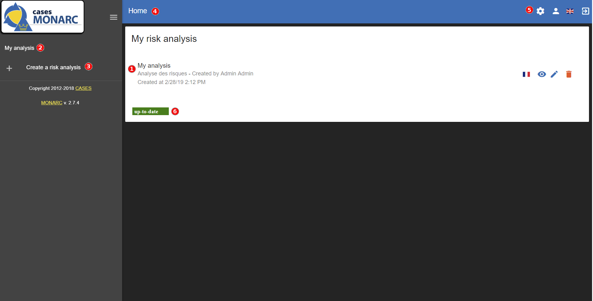
-
Graph showing the statistics of the last modified risk analysis.
-
List of existing analyses. In this case, there is only one. Click on the analysis to select it. (See Main risk analysis view).
-
Click to
create a risk analysis. (See Creating a Risk Analysis.). -
Navigation bar.
-
Administration of the client environment. Click on
Administration,Account,Interface languageorLogout(see Client Environment Administration). -
Inform you if an update of MONARC is available.
2.2. Creating a Risk Analysis
After clicking on Create a risk analysis, the following pop-up appears

-
The creation of a risk analysis is always based on an existing model. There are two choices for this:
-
List of risks models: Proposes available models in the knowledge bases. This option has at least two choices,Modelling CASES, this is the default template made available by the MONARC editor. It provides sufficient knowledge bases to start a risk analysis. This option should be used by default to start a new risk analysis. There is also the choiceBlank modelwhich is a completely empty model. This template is typically used temporarily as a Sandbox to test the contents of an import file, for example. -
Existing analysis: Duplicate risk analysis of your choice present in your environment.
-
-
Options a or b before being selected. It gets the source.
-
Select the preferred language for this new risk analysis. MONARC only present the languages actually available in the selected source.
-
Give a name to risk analysis.
-
Optional field, which allows you to describe your analysis in more detail.
2.3. Main risk analysis view

-
Risk Analyses panel: Create and select a risk analysis.
Once the analysis has been selected, the left column can be retracted in order to optimize the horizontal space by clicking on the symbol
 . .
|
-
Navigation panel: User administration and account management.
-
Access to the steps of the method by clicking on numbers
1to4. -
Contextual working areas of analysis.
3. Client Environment Administration
There are two profiles:
-
Administrator: Rights to create, modify, and delete users.
An administrator does not have the access rights on the risk analysis (but he can give them). -
Users: Access right on risk analysis.

-
Administration (Enable only for administrator users)
-
Manage users (see Manage users)
-
Organization (see Organization)
-
Deliverable templates (see Deliverable templates)
-
-
User account (see User account)
-
Interface language (see Interface language)
-
Logout
3.1. Administration
3.1.1. Manage users
List of users
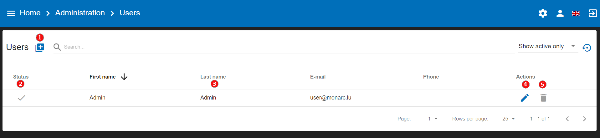
-
Create a user or administrator.
-
Status: Activating or deactivating accounts.
-
Information about the person.
-
Editing a person’s information.
-
Deleting a person.
User rights and information
After clicking on the icon  , the following screen appears:
, the following screen appears:

-
General information.
-
Selection of profiles
Administratoror/andUser. -
Management of user rights by analysis. By risk analysis, there are 3 types of rights:
-
No access.
-
Read only.
-
Read and write.
-

3.1.3. Deliverable templates
It’s possible with MONARC to custom by organization the different deliveries which are generated.

This view summarize all the available templates. There are some actions available on template :
-
Downloada template. -
Edita template. The view for editing a template is the same as one for adding one. This view is explained below. -
Deletea template. This action permanently delete the template for all the users of the company.
| The default template are only downloadable, they can’t be modified or deleted. |
-
Adda new template :

-
Select the
Categoryof the template. The category is linked to the different step of the method. -
Select the
Languageassociated to the template and the next description to fill. -
Fill the
Descriptionof the new template. -
Click on the grey area or drag and drop a document on the grey area to
Uploadthe template.
| You don’t have to fill all the languages, one language is sufficient. |
List of tags
MONARC allows you to add your deliveries template. The template is a document which use different tags.
| All the deliveries in MONARC have to be set in Word Format (.docx) |
List of tags for the layout of the document:
All these tags are mainly set in the form depending of the delivery.
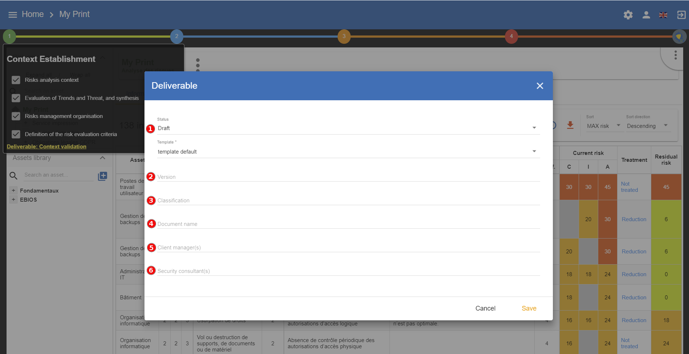
-
${STATE}: State of the document with prefilled value (draft or final). -
${VERSION}: Version of the document. -
${CLASSIFICATION}: Classification of the document. -
${DOCUMENT}: Name of the document. -
${CLIENT}: Name of the customer. -
${SMILE}: Name of the security consultant who do the analysis.
There are also two others tags which are generated by the application :
-
${COMPANY}: Name of the company which come from MONARC, it’s stored in the database and editable in the application. -
${DATE}: Date of the generation of the document. Field auto-generated by MONARC.
List of the tags from the context establishment:

-
${CONTEXT_ANA_RISK}: Free text which comes from the step: “Risk analysis context”. -
List of the tags from "Evaluation of Trends and Threat, and synthesis":
-
${SYNTH_EVAL_THREAT}: The summary of the step: “Evaluation of Trends and Threat, and synthesis”. -
${TABLE_THREATS}: A summary of the threat assessment. -
${TABLE_EVAL_TEND}: The trend assessment with the questions which are answered. -
${TABLE_THREATS_FULL}: The full threat assessment.
-
-
${CONTEXT_GEST_RISK}: Free text which comes from the step: “Risk management organization”. -
List of the tags from “Definition of the risk evaluation criteria”:
-
${SCALE_IMPACT}: The table of the impact scale. -
${SCALE_THREAT}: The table of the threats scale. -
${SCALE_VULN}: The table of the vulnerabilities scale. -
${TABLE_RISKS}: The table of the information risk acceptance threshold.
-
List of tags for the context modelling:
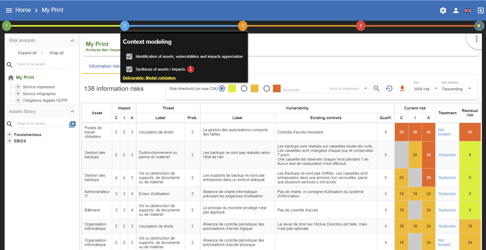
-
${SYNTH_ACTIF}: Free text which comes from the step: “synthesis of assets/impacts”.
-
${IMPACTS_APPRECIATION}: A table which is generated by MONARC. It represents the impacts/consequences of the top level assets.
List of the tags for the Evaluation and treatment of risks:

-
${SUMMARY_EVAL_RISK}: Free text which comes from the form.
List of the tags generated by MONARC :
-
${CURRENT_RISK_MAP}: Table which represents the distribution of the current risks. -
${TARGET_RISK_MAP}: Table which represents the distribution of the targeted risks. -
${DISTRIB_EVAL_RISK}: A text which represents the distribution of the risks by levels. -
${GRAPH_EVAL_RISK}: A graph which represents the${DISTRIB_EVAL_RISK} -
${RISKS_RECO_FULL}: A table which represents the recommendation for the information risks -
${OPRISKS_RECO_FULL}: A table which represents the recommendation for the operational risks -
${TABLE_AUDIT_INSTANCES}: A table with all the informational risks. -
${TABLE_AUDIT_RISKS_OP}: A table with all the operational risks.
List of the tags for Implementation and monitoring:
List of tags generated by MONARC :
-
${TABLE_IMPLEMENTATION_PLAN}: Table which shows all the recommendations to implement. -
${TABLE_IMPLEMENTATION_HISTORY}: Table which shows all the implemented recommendations.
List of the tags for the annexes:
Some tags are linked to other functionality of MONARC like:
-
${TABLE_INTERVIEW}: The list of all the interviews.
3.1.4. User account
This view allows you to:

-
Manage general user information.
-
Change the password. Password complexity is required.
3.1.5. Interface language
There are 4 interface language:
-
French
-
English
-
German
-
Dutch
| This action only changes the interfaces language (The risk analysis language is not modify). |
4. Analysis Management
The main view of risk analysis consists of 4 distinct parts.
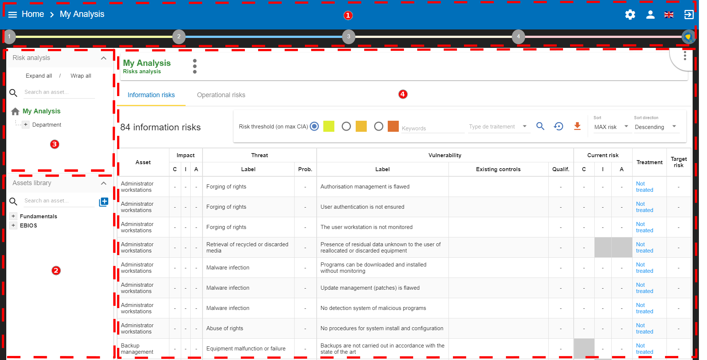
-
Access to the steps of the method: Click on the numbers from
1to4to access the menus which follow the step-by-step method (see Method steps call). -
Asset library area: Asset storage. The drag-and-drop function must be used to place these assets in the analysis (see Library).
-
Risk Analysis area: allows you to structure the assets of the analysis hierarchically by using the Drag and Drop function (hold down the left mouse button to move an asset). (See Information Risks and Operational Risks)
-
Contextual area of work in the analysis: Depending on the assets and active parts of the analysis, this area contains contextual elements of the work.
4.1. Method steps call
By clicking on the numbers 1 to 4, a contextual menu appears.

-
Ticking boxes change the progress of the method.
-
Click on the label, call the contextual management sub-screen.
| More information about method steps. Consult the Method Guide. |
4.2. Library
4.2.1. Organization of assets
Click on the + and the - to unfold and fold the categories of the library.
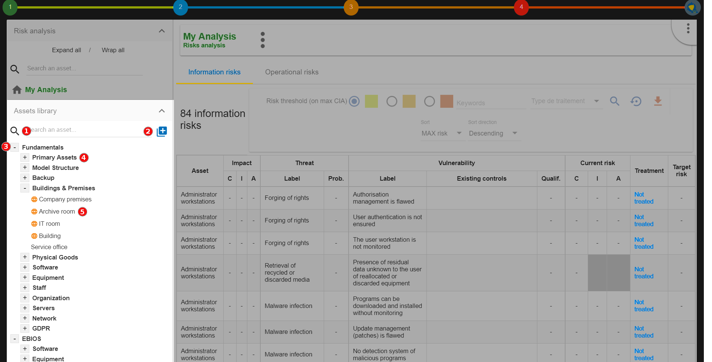
-
Search area in order to quickly find an asset.
-
Button for creating / importing assets (see Create an Asset).
-
Categories level of the library. There are usually two:
-
Fundamentals: Contains all default assets offered by CASES. -
EBIOS: Contains assets inspired by EBIOS. These are assets containing non-optimized risk models.
-
-
Sub-categories level.
-
Asset level: These are the assets that must be dragging and dropping to the risk analysis area.
4.2.2. Asset Management
The information on each asset is different depending on its type: Primary or Secondary.
This concept is explained in detail in Type of assets.
Primary asset
Click on a primary asset of the library, usually categorized in Fundamentals → Primary Assets.

-
Asset management context menu (details in Context menu of library).
-
Add an existing asset in the structure, creating a composed asset. There is no limit to the asset tree.
-
Indication if this asset is currently used in the analysis. In this case, it is found at the root of the analysis.
-
Ability to detach asset from analysis.
-
Table of operational risks possibly associated with the asset.
| Detach an asset from the analysis will remove all its evaluation. |
| A primary asset cannot possess information security risks. The modification of the operational risk table is based on the knowledge base. |
Secondary assets
Click on a secondary asset of the library, for example on Building classified in Fundamentals → Buildings & Premises.

-
Asset management context menu (details in Context menu of library).
-
Add an existing asset in the structure, creating a compound asset. There is no limit to the asset tree.
-
Indication if the asset is already part of the composition of another asset. In case, it is already a sub-element of the assets
Back Office. -
Indication if this asset is currently used in the analysis. In this case, it is found at the 3rd level of the root of the risk analysis.
-
Ability to detach asset from analysis.
-
Risk information table associated with the asset.
| Detach an asset from the analysis will remove all its evaluation. |
| Conversely, in the case of primary assets, media assets can only have information risks. The risk table is modified from the knowledge base. |
Context menu of library
By clicking on the icon  , the following context menu appears. Whatever the asset type of the library, the menu is the same.
, the following context menu appears. Whatever the asset type of the library, the menu is the same.
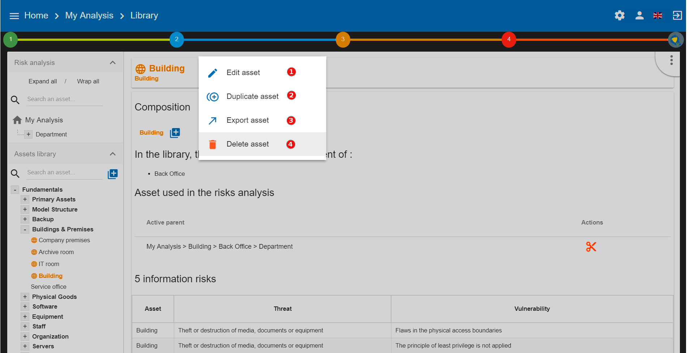
-
Starts the pop-up that allows you to modify most of the parameters of an asset (see Edit an asset).
-
Create a copy of the asset named
Name (copy #), which is then renamed with theEdit Assetoption. -
Launches asset export pop-up (see Exporting an asset).
-
Delete an asset.
Delete action is definitive, even if the asset is used in the analysis.
4.2.3. Create an Asset
In the library, after clicking on the icon  , the following pop-up appears:
, the following pop-up appears:

-
To create an asset, it is also possible to import it (see Importing an asset).
-
Name: This name must be unique for the analysis. -
Label: This is an additional description, it is displayed in the tooltip when the mouse is positioned without moving on the asset. -
Scope: Two possible choices:-
Local: Identified asset risks are to be assessed whenever the asset is present in the analysis. A primary asset is generally local in scope. -
Global: The risks of the asset are only to be assessed once for the whole analysis.This option is to be used mainly for the support assets, as soon as they are included in several primary assets.
Example: For IT room or main building, once the risks assessed, only the impact of the primary asset can change the level of risk.
-
-
Asset type: It determines the nature of the asset and therefore the risk model associated with it. -
Category: It is the location of the library where the asset will be stored, or create a new category. -
Operational risk Tag: That allows the asset to be associated with operational risks by default.This option is enabled only when asset type is a primary (i.e. Information, process, container or service)
-
Location: Allows you to order assets in the selected category.
4.2.4. Edit an asset
The call is made from the Context menu of library when an asset is selected in the library.
For an explanation of all fields that can be changed, see Create an Asset. For technical reasons, the modification does not make it possible to modify:
-
Scope -
Asset type
4.2.5. Importing an asset
This pop-up is accessible from the pop-up Add a new asset
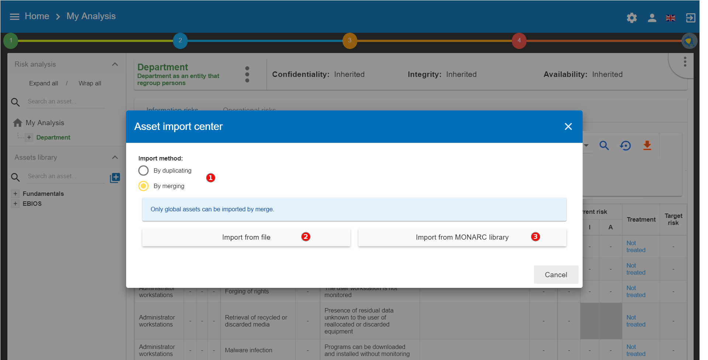
-
The import principle requires that the imported asset remain in the category in which it is located. Two import methods are possible:
-
By duplicating: When importing, if an asset of the same name exists, then it will be duplicated and the name will suffix- Imp #n. -
By merging: When importing, if an asset of the same name exists, then it will be replaced. In this case, only the associated risk model will be modified.Only global assets can be imported by merging.
-
-
Import from file: allows to exchange assets from one environment to another (see Importing an asset from a file). -
Import from MONARC library: This option is not available in the case of a Stand alone version of MONARC (see Import from the MONARC library).
| The import of an uncontrolled asset can be destructive for the current analysis. It is strongly advised to create a Snapshot before importing, or to use an empty Sandbox analysis. |
Importing an asset from a file
The pop-up appears after clicking on the Import from file option in the Asset Import center.

-
Choose File: Access the directories of the computer to point to a file. -
Asset password: When exporting the selected file, a password has been used to encrypt the file, it must be entered here. -
Import file: Starts importing file
Import from the MONARC library
The pop-up appears after clicking on the Import from MONARC library option in the Asset Import center.
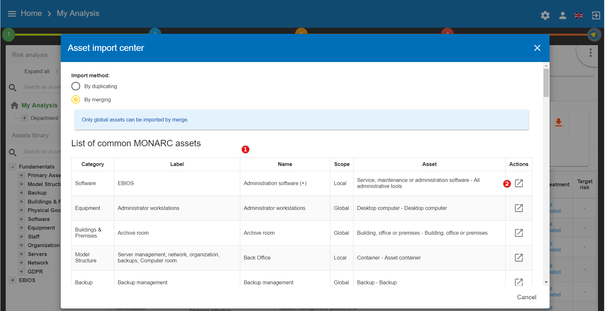
-
Table of available assets in the MONARC common library.
-
Action: Initiate the import procedure for the corresponding asset.
4.2.6. Exporting an asset

-
Custom password: Possibility to encrypt the generated JSON file with a symmetric password that will be necessary during the import. -
Without password: JSON file decoded.
4.3. Information Risks
By selecting the top of the analysis or an asset in the tree, the risk table appears. There are two separate risk tables:

-
The information risk table based on CIA[1] criteria.
-
The operational risk table based on ROLFP[2] (see Operational Risks)
Depending selection, the display risk table may change:
| Selection | Information Risks | Operational Risks |
|---|---|---|
Root of analysis |
All risks of analysis |
All risks of analysis |
Primary Asset |
Risks associated with his supporting assets |
Risks associated with himself |
Supporting Asset |
Risks associated with himself |
No risks |
4.3.1. Risks table

-
The primary asset
Departmentis selected in the analysis. -
Display the CIA impacts of the
Department. -
Information Risk tab selected.
-
Departmentasset consists of supporting assets that provide total information risks. -
Possibility to select only certain risks according to the risk acceptance threshold.
-
Ability to sort of most columns of the table.

-
Asset: Assets involved in the evaluation. -
CIA Impact: The CIA criteria that have been assigned to theDepartmentare inherited by default from the supporting assets. -
Prob: Likelihood of threat (see Likelihood scale). -
Existing controls: Describe, in a factual manner, the security control in place concerning the vulnerability or, more broadly, the risk. -
Qualif: Evaluation of control in place in order to determine the level of vulnerability (see Vulnerability scale). -
Current risk: Risk value calculated according to the risk calculation formula. The colours depend on the risk acceptance grid (see Acceptance thresholds). -
Treatment: Indication if the risk is treated, and links to the risk profile (see Risk information sheet). -
Residual risk: Value of residual risk. In the case of the figure above, the residual risk is equal to the max risk because it is not yet treated.
| By leaving the cursor in most fields, a tooltip appears. |
4.3.2. Risk information sheet
The risk sheet is displayed when you click on the Not treated link in the information risk table.
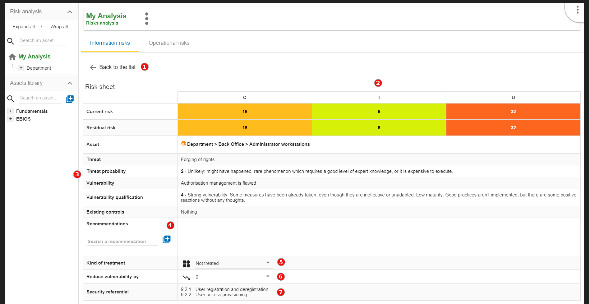
-
Click to turn back to risk table.
-
Risk values for CID criteria (not yet covered in the example).
-
Reminders of the parameters of the risk table.
-
Creation / Assignment button for one or more recommendations.
-
Selection of the kind of treatment:
-
Reduction / Modification
-
Denied
-
Accepted
-
Shared
-
-
Choosing a risk reduction value, the more effective the control is, the greater the reduction value is.
-
Proposals of controls, which come from various repositories.
| Do not forget to save the form in order to calculate the residual risk. |
4.3.3. Adding additional risk
When an asset is selected in the analysis:
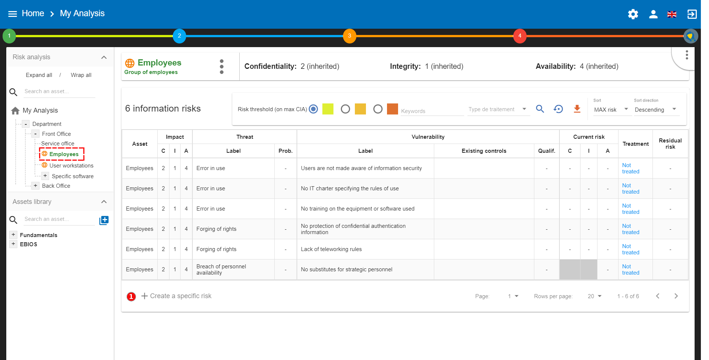
-
Click to
create a specific risk: A pop-up appears and allows to associate a threat and vulnerability pair with the current asset.
| Threat and vulnerability must exist beforehand. |
4.3.4. Contextual menu of asset
By clicking on the icon , the context menu of asset appears:

-
Edit impacts: Displays the impact and consequence modification view (see Impacts and consequences). -
Import analysis: Allows you to import an analysis from the location pointed to by the selected asset of the scan. The import works exactly like importing an asset. (See Importing an asset.) -
Export analysis: Allows you to export analysis, from the place pointed by the selected asset of the analysis. The export works exactly like exporting an asset. (See Exporting an asset.)The additional option, export with assessment. It means, export gets the evaluation and treatment of risks. By default is disabled.
-
See asset in the library: Displays the asset from the library, allowing you to have another context menu that allows changes to the asset. (See Context menu of library.) -
Detach: This removes an asset from the risk analysis.This action may lead to the loss of risk assessments for this asset and its childrens.
4.3.5. Impacts and consequences
The aim is to define the level of the primary assets, the impacts and consequences that can result from the realization of the risks of the model.
The pop-up below appears.

-
Consultation of impact scales is done through the menu at the top right of the screen.
By leaving the pointer unmoved over the numbers,the meaning of this number appears after one second.
When one of the criteria C (confidentiality), I (integrity) or A (availability) is allocated, there is a need to ask : what are the consequences on the company, and more particularly on its ROLFP, i.e. its Reputation, its Operation, its Legal, its Finances or the impact on the Person (in the sense of personal data).
In the case of the above figure, the 3 (out of 5) impact on confidentiality, is explained by the maximum value ROLFP regarding
confidentiality. For example, 3 is the consequence of the person in case of disclosure of his personal file.
To hide the consequences that will not consider. Click on the icon  . To show it again. Click on . To show it again. Click on Show hidden consequences
|
4.4. Operational Risks
4.4.1. Risks table

-
Select the primary asset. In this case,
Department. -
Click on tab
Operational risks. -
Total of operational risks associated with primary asset.
-
Ability to select only certain risks, according to the risk acceptance threshold.
-
Ability to sort of most columns of the table.
| The operational risk table may or may not display the inherent risks. They are the operational risks that would impact the organization without any controls in place. To show this option see Creating a Risk Analysis. |

-
Asset: Assets involved in the evaluation -
Risk description: Description of risk -
Inherent risk: Operational risk is calculated from the two factors, the probability (Prob.) of the risk scenario and theImpactbased on the ROLFP[2] without controls in place. The current risk represents the maximum value of the probability of the ROLFP impact values. -
Net risk: Net risk represents the risk of the measures currently in place. The calculation is the same as for the inherent risks. -
Existing controls: Describe here, in a factual manner, the control in place. -
Treatment: Indication if the risk is treated and risk profile (see Operational risk sheet). -
Residual risk: Value of the residual risk. In the case of the figure above, the residual risk is equal to the max risk because it has not yet been treated.
4.4.2. Operational risk sheet
The risk card is displayed when you click on the Not treated link in the operational risk table.
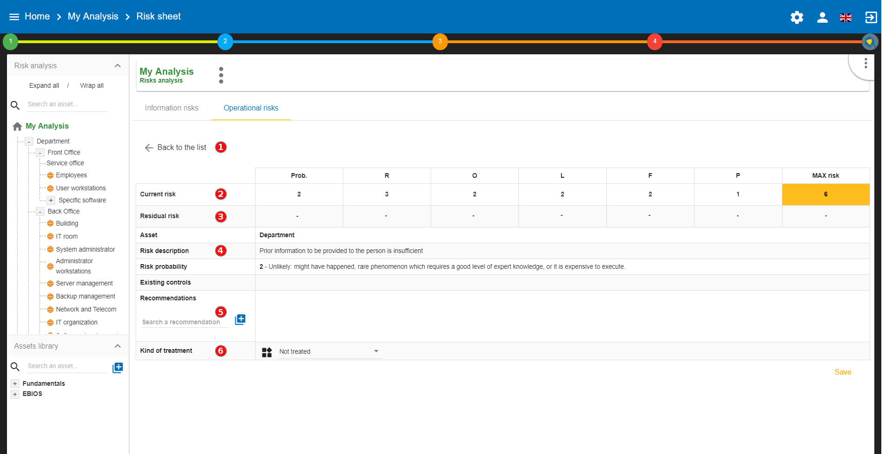
-
Back to the list: Return to risk table. -
Current risk: Values for risk probability (Prob.) and ROLFP[2] Criteria. -
Residual risk: Values for risk probability and ROLFP[2] criteria (not yet treated). Those values should be adjusted according to the recommendation and the measures that will be put in place. -
Reminders of the parameters of the risk table.
-
Recommmendations: Creation / Assignment button for adding one or more recommendations. -
Kind of treatment: Selection of the type of risk treatment, the 4 values have their sources of ISO / IEC 27005 :-
Modification / Reduce
-
Refused
-
Accepted
-
Shared
-
-
Proposals of controls, which come from referentials.
| Once the validation has been done, the risk is treated. |

4.4.3. Adding additional risk
When an asset is selected in the analysis:

-
Click to
create a specific risk: A pop-up appears and allows a new risk to be associated with the current asset. If the risk does not exist, it can be created directly.
5. Evaluation Scales
The menu is always accessible from the main view of MONARC:
-
Calling the right contextual menu

-
Calling the Management view of
Evaluation scales

The view Evaluation scales shows the following criteria:
-
Impact scale
-
Likelihood scale
-
Vulnerability scale
-
The management of information risk acceptance thresholds
-
The management of operational risk acceptance thresholds
| All scales are editable and customizable. |
| However, it is no longer permitted to modify scales as soon as an evaluation has been encoded. |
5.1. Impact scale

-
Click to modify the number of scales.
-
Click on
Show hidden impactsto show or hide the criteria not used in the analysis. -
Click on the symbol to hide an unused column.
-
Click on
New column nameto add new impact criteria. -
Click to edit the headings of each scale.
5.2. Likelihood scale

-
Click to modify the number of scales
-
Click to edit the heading on each scale (Management identical to the impact scale).
5.3. Vulnerability scale

-
Click to modify the number of scales
-
Click to edit the heading on each scale (Management identical to the impact scale).
5.4. Acceptance thresholds
There are two separate tables for acceptability thresholds, as operational risk and information risk are not calculated in the same way. Information risks are calculated using three criteria:

-
Modification of threshold levels of information risks. The table displayed above (as well as the risk analysis tables) is updated automatically.
-
Information risks are calculated using three criteria:
Impact x Threat x Vulnerability -
Modification of threshold levels of operational risks. The table displayed above (as well as the risk analysis tables) is updated automatically.
-
Operational risks are calculated using two criteria:
Impact x Probability
6. Management of Knowledge Base
The menu is always accessible from the main view of MONARC:
-
Calling the right contextual menu
-
Calling the Management view of
Knowledge base

All parameters are managed with the same view:

-
Selectingthe desired parameter tab -
Added a
parameteraccording to the active tab. -
Findinga parameter. -
Selecta parameter (for deletion). -
Editing / deletingactive parameters.
Generally, all parameters have a code, label, and description
-
The code is used to categorize the parameter.
-
The label is displayed in all MONARC views.
-
The description is the label that typically appears in the tooltip.
|
When adding an item, all the tabs (except information risks) have the possibility to add items from external files (click at the top of the pop-up on Import from files). 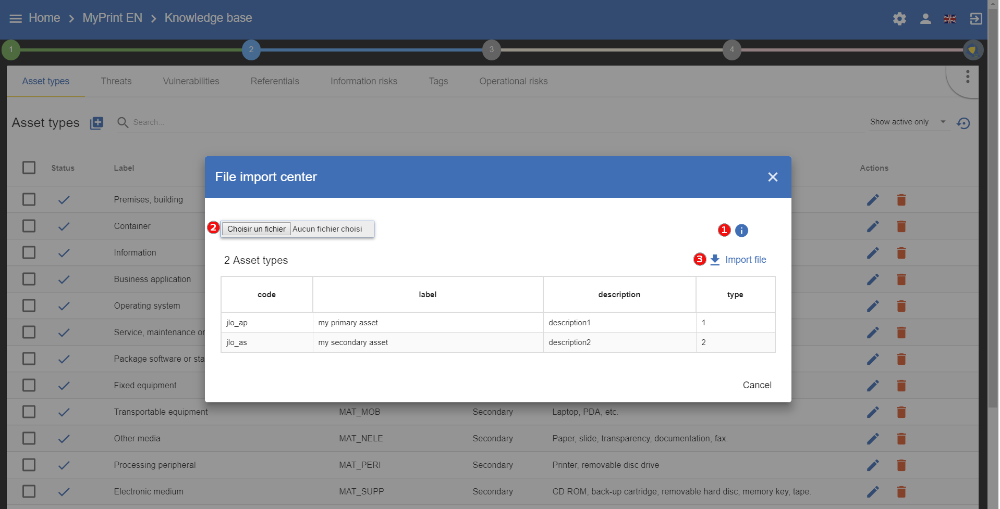
|
6.1. Type of assets
There are two types of assets:
-
Primary or business assets: They generally represent, but are not limited to, internal or external services, processes or information. They are the ones that are at the root of the analysis and that will decline their impact on other assets. The containers used to organize the analysis visually are declared as a primary asset (e.g. Back Office).
-
Secondary or supporting assets: These are the assets on which risks are associated, they are using to describe the risk profile of the primary assets.
6.2. Threats
The essential parameters of threat threats are the association with the CIA criteria. It is important when creating a new threat to properly specify these criteria, because they will condition the risk tables. Example: Passive listening (listening, watching without touching anything) is a threat, for example, that affects only the criterion of confidentiality. Threats have themes to generate statistics.
6.3. Vulnerabilities
Vulnerabilities must describe the risk context in a negative way. The greater the vulnerability, the less existing or effective measures are. Vulnerability is inverse to maturity. Example: "Absence of identification of sensitive goods": Low vulnerability if the sensitive goods are identified and vice versa, the vulnerability is great if they are not. The description of the vulnerability is very important because it appears in the risk table as an additional description that helps the security specialist to refine his questionnaire or the precise points that are sought in relation to a risk.
6.4. Referentials
It is the repository that is used by default to help the implementation of controls with regard to a specific risk.

-
This area is dedicated to manage the selection of referential. In the right, there are the standard buttons to edit, add and delete a referential.
-
This new icon appears when you have two referential, it allows you to add, import or export matching between the selected referential and the others.
-
This area is dedicated so manage security controls of the selected referential.
6.5. Risks
This table is the core of MONARC’s knowledge base. It is here that associations are made between "Asset Type", "Threat" and "Vulnerability". It is the combination of the risks inherent in each asset that will be proposed by default when the risk model is created. For each association that can be assimilated as a risk scenario, it is possible to associate security measures from the referentials tabs. Only supporting assets are available for a Threat / Vulnerability association.

-
It is possible to switch between referential to see its linked controls of the risks show below.
-
This new icon appears when you have two referential, it allows you to automatically linked controls of a referential to risks. It uses the matching defined in the step before.
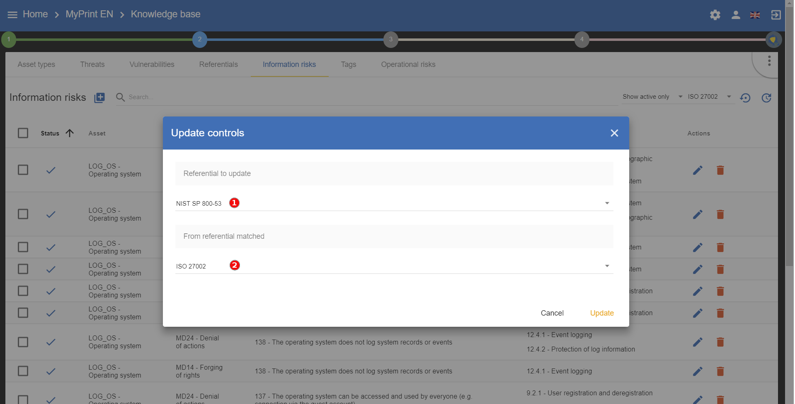
-
The first referential is the one which you want to link to the risks.
-
The second is the source you want to use (it has taken risks linked to its controls).
6.6. Tags (Operational Risks)
Tags represent a categorization of operational risks. It is a logical grouping of risks that can then be associated with primary assets.
6.7. Operational Risks
It is a list of risks created by default or added specifically. Each risk can be associated with one or more tags, which allows, when depositing an asset in the analysis to propose default risks, as for the risks of the information. It is possible to link security controls as for the risks of the information.
7. Statement of applicability
The menu is always accessible from the main view of MONARC:
-
Calling the right contextual menu
-
Calling the Management view of
Statement of applicability

The view Statement of applicabality above:

-
Choose the
referentialon which one you want to work. -
The
codeis a clickable field, click on it and see all the risks attached to the security control selected.

-
Choose if the security control is
included or excluded, just click on the acronym, the description of it appears if the cursor is on it. -
The field
remarks/justification,Evidences,Actionsare text field, just click on it and fill. -
The
Level of complianceis a drop-down list. -
Exportthe selected view in CSV. -
Importinformation for the selected referential from another.
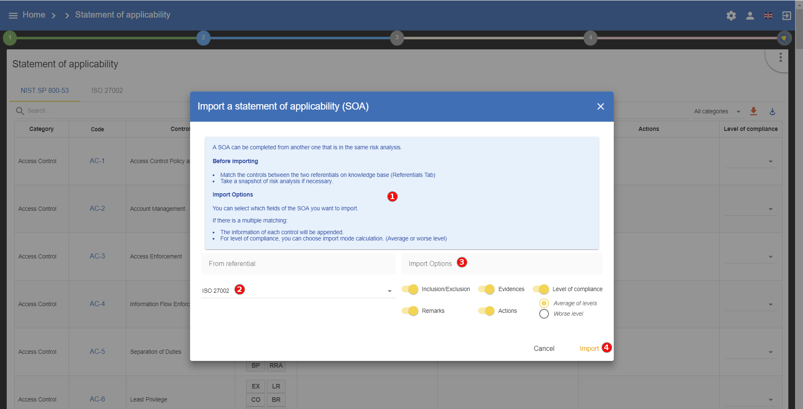
-
Readwhat you are willing to do. -
Choose the
referentialwhich contains information that you want to convert into the selected one. -
Choose
informationyou want to import. -
Importthe information of the referential.
8. Dashboard
The menu is always accessible from the main view of MONARC:
-
Calling the right contextual menu
-
Calling the Management view of
Dashboard
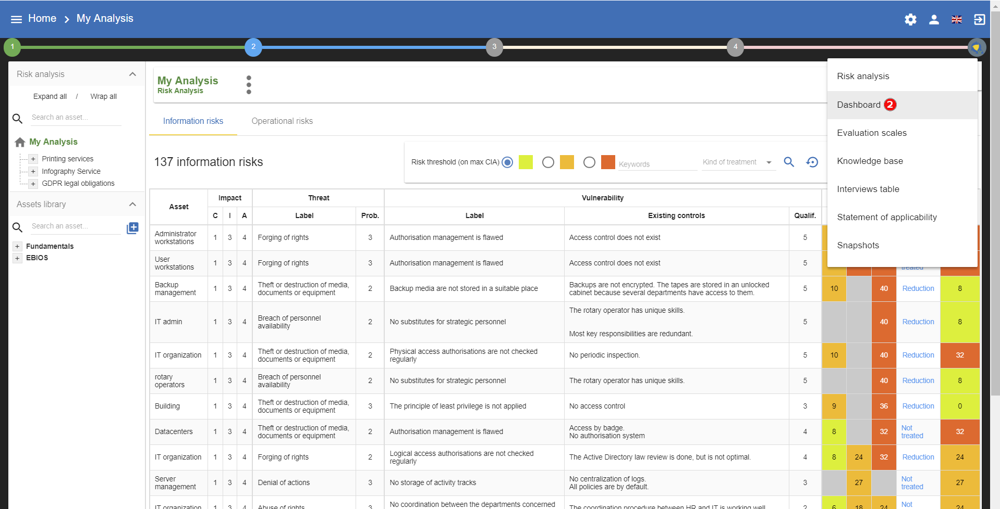
The view Dashboard shows informations about the following topics:
-
Risks
-
Threats
-
Vulnerabilities
-
Cartography
-
Compliance
| Most of the charts have parameters and are exportable. |
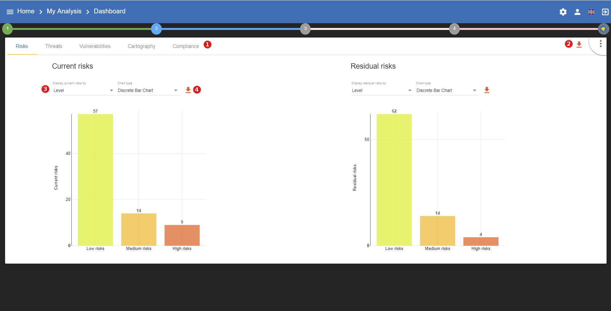
All the part of the dashboard have the same functionalities.
-
Choosethe part on which dashboard is required. -
Exportall the data in a XLSX document to make your own graph. -
Changethe paramaters of the selected chart. -
Exportthe chart as PNG
9. Interviews
The interview table allows during a risk analysis to list in the final report, the various interviews that were necessary to collect the information. Information such as dates, interviewees can be entered for a comprehensive report.
The menu is always accessible from the main view of MONARC:
-
Calling the right contextual menu
-
Calling the Management view of
Interviews

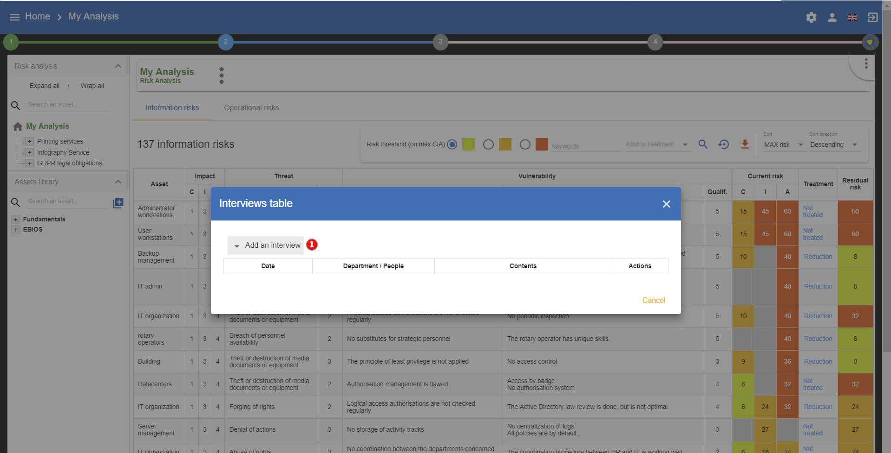
-
Click to encode a new interview
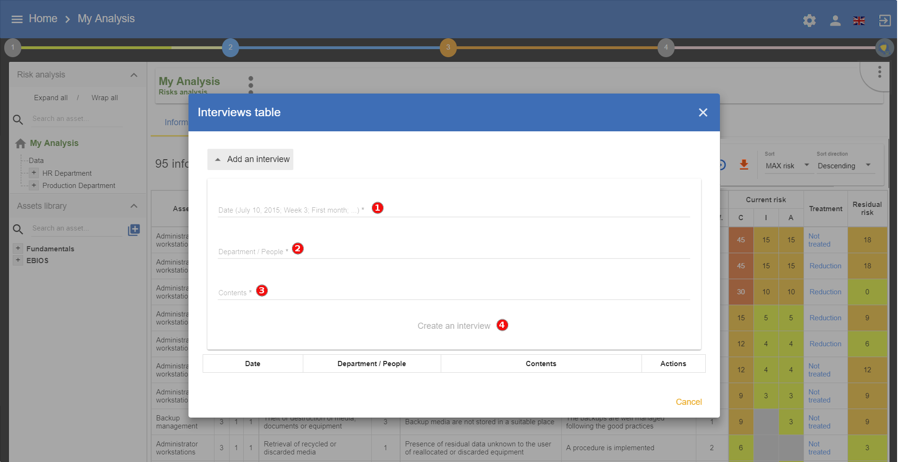
Some information has to be entered
-
Date -
Namesof people or name of the department -
The
subjectscovered. -
Once all the fields are filled,
create an interview
10. Snapshots
Snapshots allow you to create a full backup for analysis.
| It is a function to use regularly during the course, before and after great changes, because it is the only way to go back to the changes. |
The menu is always accessible from the main view of MONARC:
-
Calling the right contextual menu
-
Calling the Management view of
Snapshot
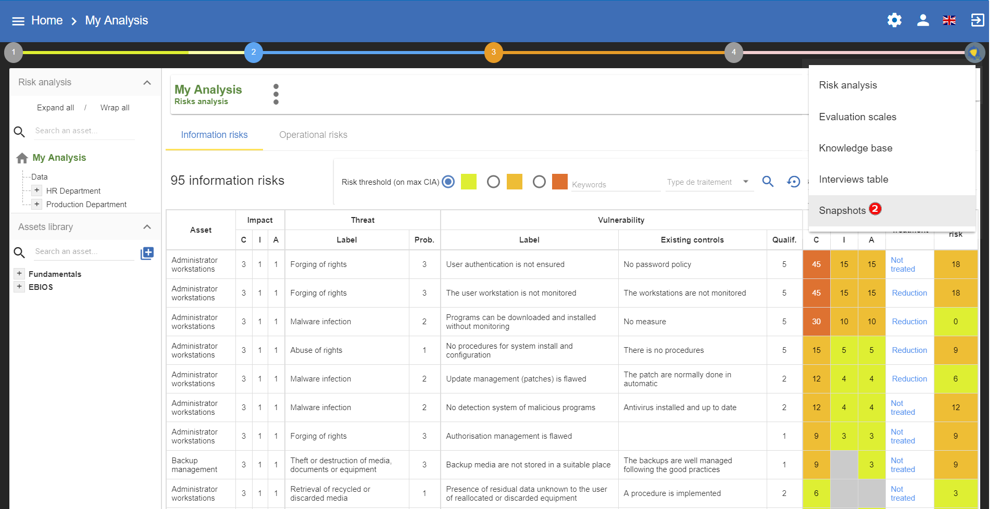
The following pop-up appears:

-
Createa Snapshot: Possibility to enter a comment allowing to contextualize the snapshot. There are some possible actions:-
Viewa Snapshot -
RestoreSnapshot. Caution this option will overwrite the current analysis. -
Deletea Snapshot.
-
When viewing a snapshot, no changes are possible, and the blue bar as shown above is displayed:

-
Click on the button to return to normal operations.
11. Managing the Implementation Treatment Plan
By clicking on the number 4, the following menu will appear:

This view goes beyond the ISO/IEC 27005, as it enables the user to manage the follow-up to the implementation of the measures.

-
This is a
recommandationestablished before. -
You can put a
commentfor the implementation of the recommendation. -
For each recommendation you can set a
manager. -
For each recommendation you can set a
deadline. -
Statusof Implementation. -
Click on the icon
 to implement the recommendation and switch on the following view.
to implement the recommendation and switch on the following view.

-
Set the
new control, now in place. It will replace the old one in the risk analysis and replace the old current risk by the residual risk. -
Launches the pop-up validation of the update below by clicking on the icon


Follow the same procedure for each recommendation. After that go to your risk analysis and make a second iteration.
After validation, the risk concerned becomes the current risk; the recommendation is deleted from the risk concerned.
All validations are stored in history and can be consulted:

-
Click to view past recommendations